Bestiárium
Mindkét könyv összes értékblokkja A-tól Z-ig – összesen 256. Vidd az egeret egy név fölé a teljes blokkért; kattints, hogy odaugorj.
Nincs benne a nyomtatott könyvekben: a wiki a könyvek értékblokkjaiból állítja össze a listát.
A
 Adept Rime Lords
Adept Rime Lords Adventurer Lygos and the South
Adventurer Lygos and the South- Alley Cutthroats Gordin's Delve
 Anan Gllo Death and the Undying
Anan Gllo Death and the Undying Ancestral Spirits Gods and Religion
Ancestral Spirits Gods and Religion- Andalau Spirits of the Wild
- Antiquarian Lygos and the South
- Assassin Lygos and the South

Auntie Sallow Fae Aurochs The Flats
Aurochs The Flats Avalanche The Whitefang Mountains
Avalanche The Whitefang Mountains
B
- Bandit South Manmarch
- Bandit The Flats
- Bandit Chief South Manmarch
- Bandit Chief The Flats
- Barrow Wight Barrow Builders
 Base Archon Primordial Powers
Base Archon Primordial Powers- Beast Warden Spirits of the Wild
- Beznpol The Flats
 Bhoka The Whitefang Mountains
Bhoka The Whitefang Mountains- Birdwaig Spirits of the Wild
- Blue Magpie The Ruined Tower
- Blush-of-Dawn Fae
- Boar The Great Wood
- Brawzbedr The Steplands
- Brennan Marshedge
 Bronze Colossus Forge Lords
Bronze Colossus Forge Lords- Broodfather Crinwin
- Butcherbird The Great Wood
C
- Caralandrao Huffel Peaks
- Caravan Guard Lygos and the South
- Caribou The Frozen Wastes
- Cavalry Lygos and the South
- Cave Bear The Great Wood
- Cave Spirit Spirits of the Wild
- Ceffylwraig Spirits of the Wild
- Ceirwmawr The Great Wood
 Chaos Primordial Powers
Chaos Primordial Powers- Chosen Shield North Manmarch
- Cinderboar The Things Below
- Cinderwraith Forge Lords
- Clockwork Spider Forge Lords
- Coedwaig Spirits of the Wild
- Cold Spirit Spirits of the Wild
- Corrupted Glasbren The Things Below
- Corruption The Things Below
- Cougar The Great Wood
- Crinwin Crinwin
- Crinwin Dangers
- Cultist The Things Below
- Cwisarff The Great Wood
- Cynddaraig The Great Wood
D
 Daagon, Who Waits in Deep Waters The Things Below
Daagon, Who Waits in Deep Waters The Things Below- Dawa Eyegouger Gordin's Delve
- Death Curse Death and the Undying
- Desperate Souls Gordin's Delve
- Dialeddwr Death and the Undying
- Dool Spirit Death and the Undying
 Draventao Forge Lords
Draventao Forge Lords- Drought Tor, the Rain-maker
E
F
- Fadyn Spirits of the Wild
- False Adept Rime Lords
- Fanatic Helior, the Daybringer
- Fate Primordial Powers
- Fate Primordial Powers
- Feathered Drake The Great Wood
- Fen Blight Ferrier's Fen
- Fen-troll Ferrier's Fen
- Fen-walker Ferrier's Fen
- Ferocedes Ogran, Ghostly Forge Lord The Ruined Tower
- Fertility Spirit Spirits of the Wild
- Fire Marshedge
- Fire Drake Huffel Peaks
- Fire Spirit Spirits of the Wild
- Fire Vortex Tempest Lords
- Frythanc The Flats
- Frythanc Fledgling Huffel Peaks
- Fundamental Primordial Powers
G
- Garden Spirits Gods and Religion
- Ghostly Hounds The Pale Hunter
- Gingkara Rime Lords
- Glasbren Spirits of the Wild
- God of the Cistern Gods and Religion
- God of Weaving Gods and Religion
- God of Whisky Gods and Religion
- Gouzadn The Steplands
- Gravity Primordial Powers
- Grimstew Fae
- Grochslon The Steplands
- Group Hillfolk
- Grwgnach Spirits of the Wild
- Guardian Barrier Pass
- Guardian The Whitefang Mountains
- Gwyllgi Death and the Undying
- Gylglyd Vines The Great Wood
H
- Hagr The Great Wood
- Hand of Daagon The Things Below
- Hdour Hillfolk
- Hearth Spirit Gods and Religion
 Hec'tumel, Pale Serpent! Slitherer In Darkness! Death Is Its Eyes! The Things Below
Hec'tumel, Pale Serpent! Slitherer In Darkness! Death Is Its Eyes! The Things Below- Hennain Spirits of the Wild
- Hlad, the Devourer, the Eternal Maw The Things Below
- Hlomren The Flats
- Hollow Fae Fae
- Horned Drake South Manmarch
- Household Spirits Gods and Religion
I
- Ice Drake The Whitefang Mountains
- Incomprehensible Knowledge Primordial Powers
- Infantry Lygos and the South
- Infected Hagr Fomoraij
- Invasion Lygos and the South
- Iron Hound Forge Lords
J
K
L
- L'bin'bozia, Flesh-Candle, the Wax Skull, Roiling Tomb The Things Below
- Laborers Gordin's Delve
- Legionary Lygos and the South
- Light Primordial Powers
- Lightning Sconce The Ruined Tower
- Lightning Vortex Tempest Lords
- Lithic Servant Stone Lords
- Livrothos, Cleansing Flame Primordial Powers
- Llamudwr Green Lords
- Log Spirit Spirits of the Wild
- Luglfsk The Dread River
M
- Magma Worm The Labyrinth
- Mammoth The Frozen Wastes
- Mammoth Herder The Frozen Wastes
- Manmarcher Recruit North Manmarch
- Manmarcher Veteran North Manmarch
- Meadow/Prairie/Grass Spirit Spirits of the Wild
- Mist/Fog Spirit Spirits of the Wild
- Mkhalang Rime Lords
- Monk Barrier Pass
- Monk The Whitefang Mountains
- Morgais The Things Below
- Mosaic Swarm Stone Lords
- Moss Spirits Sites
- Mountain Ape The Whitefang Mountains
- Mud Spirit Spirits of the Wild
- Mummified Green Lord Green Lords
- Mummified Servant Green Lords
- Myghal, Deathless Sorcerer Barrow Builders
N
- Nailadd The Great Wood
- Necromancer Death and the Undying
- Nemurvojak Vor Svetelik
- Nerth Serpent Spirits of the Wild
- Nine-Fingered Stranger Tor, the Rain-maker
- Novice Barrier Pass
- Novice The Whitefang Mountains
O
P
- Pacifier Stone Lords
- Pack Drake The Flats
- Patchwork Construct The Ruined Tower
- Peat/Bog/Fen Spirit Spirits of the Wild
- Phantom Rider Barrow Builders
- Pilgrims Helior, the Daybringer
- Plasmic Horror Vor Svetelik
- Pond Spirit Spirits of the Wild
- Prairie Fire The Flats
- Prenysbyrd Spirits of the Wild
- Primordial Flame Primordial Powers
- Pryder Sites
- Pyped Death and the Undying
R
- Rain Spirit Spirits of the Wild
- Raselbaedd The Great Wood
- Rhagedn Green Lords
- Rime Lord Rime Lords
- Rock/Stone/Boulder/Hill Spirit Spirits of the Wild
S
- Sapling Spirit Spirits of the Wild
- Screech Eel Three Coven Lake
- Servants of Daagon Blackwater Lake
- Shade Death and the Undying
- Shaksa Rime Lords
- Shantyara The Whitefang Mountains
- Shellback Drake The Flats
- Singing Sword Forge Lords
- Skirmisher Lygos and the South
- Skittering Horror The Ruined Tower
- Snaplilies Ferrier's Fen
- Snow Spirit Spirits of the Wild
- Soithech The Labyrinth
- Sorcerer The Things Below
- Specter Death and the Undying
- Spirit of the Spring Sites
- Spirit-talker Hillfolk
- Spitting Drake The Steplands
- Star-mole The Ruined Tower
- Stone Sentinel Stone Lords
- Storm Spirit Spirits of the Wild
- Stream/Creek Spirit Spirits of the Wild
- Suarachan Hunters Ferrier's Fen
- Suarachan Singers Ferrier's Fen
- Suarachan Soothsayer Ferrier's Fen
- Swarm of Silvery Vermin Fomoraij
- Swyn Green Lords
T
- Tal Gerdwyr The Great Wood
- Tcaventes, Shackle and Key The Labyrinth
- The Almtakers, Guardian Fae Dangers
- The Bear of Winter Fae
- The Blood-drunk Queen Three Coven Lake
- The Bloody Boots Fae
- The Chained Beast Three Coven Lake
- The Crombil, Awakened The Crombil
- The Forest's Wrath Red Groves
- The Ghostly Legion Death and the Undying
- The Gliomor Ferrier's Fen
- The Guard Marshedge
- The Gwraig Wen Death and the Undying
- The Halfeyd Spirits of the Wild
- The Howling Curse The Whitefang Mountains
- The Nightingale Primordial Powers
 The Pale Hunter The Pale Hunter
The Pale Hunter The Pale Hunter- The Quiet Twins The Stream
- The Suileach The Dread River
- The White Billies Fae
- Thieves Marshedge
- Thornthumb Fae
- Thrall The Things Below
- Thraulgwyn Raider The Labyrinth
- Threshold Spirit Gods and Religion
- Thunder Drake The Flats
- Time Primordial Powers
- Tomb-Bog Spirit Death and the Undying
- Tonnerhorn North Manmarch
- Totnatter The Dread River
- Trail Spirit Spirits of the Wild
- Tree Spirit Spirits of the Wild
- Troelloff Spirits of the Wild
- "Typical" Fomoraij Fomoraij
U
V
W
- War-chariot North Manmarch
- Water Vortex Tempest Lords
- Wee Folk Fae
- Wild Horse The Flats
- Willow Witch Ferrier's Fen
- Wind Spirit Spirits of the Wild
- Wind Vortex Tempest Lords
- Wisent The Great Wood
- Wolf The Great Wood
- Wraith Death and the Undying
- Wretch The Things Below
- Wynfor & Tiwlip Sites